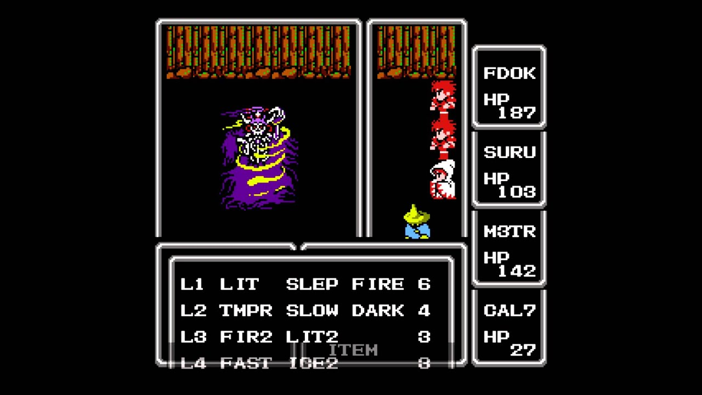
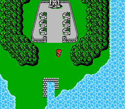

The First Fantasy
Final Fantasy (FF for short) was developed and released in 1987 by Square, which later became Square Enix. The game is the first installment of the Final Fantasy series and is one of the defining titles for the RPG genre. This version of the game was first released for the NES but was later remade for several consoles. The western release of the game was in 1990, for North America.
Gameplay
The game is structured like any other RPG with turn-based combat. It features an overworld map in which the player travels, as well as town and dungeon maps. The battle screen clearly reminds us that the combat in the game is menu-based, which means that the player chooses each turn what action to take. The encounters with monsters during exploration are mostly randomly generated, with the exception of bosses or special battles. At the beginning of the game, the player is asked to choose classes for their characters, from a classic array of options such as warrior, thief, different types of mages, and others. This choice determines the abilities which can be used in battle, hence the preferred playstyle. The classes come with predefined restrictions on usable weapons and abilities, making them an important choice when thinking about the balance of the party members. While progressing in the game the characters gain experience points, necessary to improve the level of the roster and gain new powers and strength.
A Medieval, Magical World
Final Fantasy takes place in a fantasy world, in which four elemental powers exist: fire, water, earth, and wind. These elements are determined by the state of four crystals, which are also one of the recurring themes of the future games of the series. The foundations of the story for future installments are set with the introduction of the Warriors of Light, chosen by the crystals. The main theme of the game is the fight between good and evil and heroic journeys. The player gets enveloped into the plot through the interaction with a myriad of NPCs (non-playable characters), the discovery of new cities, and the pleasure of exploring this new world.
Revisions
Final Fantasy is a game that was remade several times for newer platforms
and consoles and was in some cases packaged with the second title of the
series, Final Fantasy II. While the remakes keep the story and battle
system of the original, various improvement in graphics, sound, and other
elements were introduced.
The main problem people had with FF was the rather lacking graphics, which were
extremely simple. In the end, the game was fairly well received and represents
one of the pillars in the RPG turn-based-combat genre.